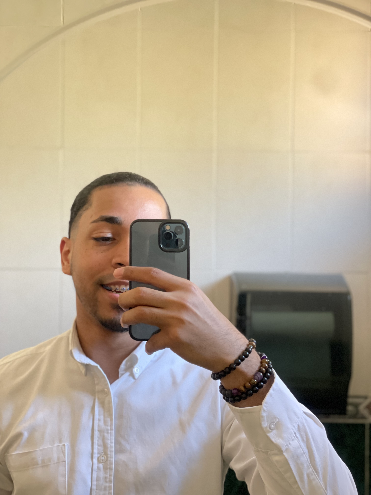

Laurin Vasquez Peñaló

Summary
I'm a software developer student at BYU-Idaho with experience
using the Python language, C#, and management of data base in
MySQL
Education
-
Electronics Technician | Politecnico Victor Estrella Liz | August 2016 - July 2018
- Electronic 1 and 2
- Residential Electricity
- Electricity automation with PLC
-
Software Development BS | BYU-Idaho | currently enrolled
- Apply strong design and problem-solving skills
- Python,HTML/CSS. JavaScript, and C#
- Convert software requirements into code
-
PathwayConnect | BYU Pathway-Worldwide | September 2021 - July 2022
- University skill
- Leadership
- Career management
Work
here I will add my previous work made as developer
Skills
- Problem Solving skill
- Teamwork
- Web developer
- Microsoft office package
- CRM